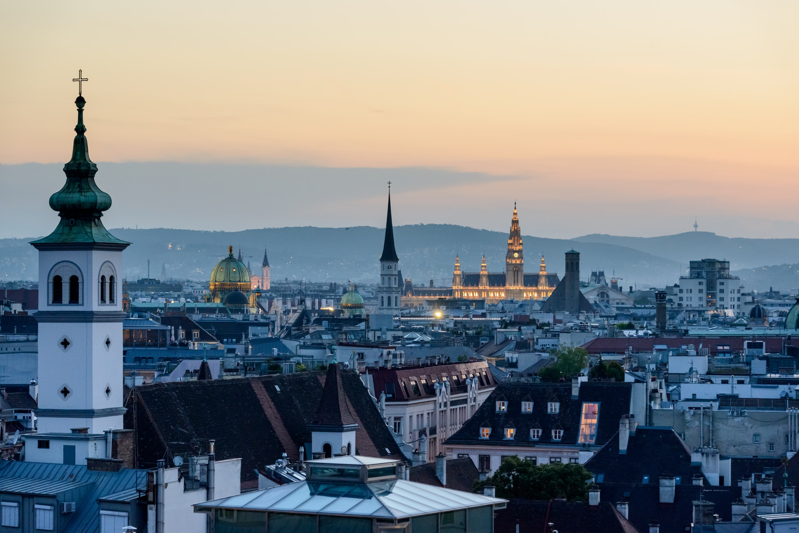

A Trip To Vienna
My most recent trip was to the Austria’s capital – Vienna. The city with glorious architecture and rich history. My stay only lasted a few days, but the impression of the city still left me in awe. The transportation in the city of Vienna is spectacular.
My trip consisted of lots of walking, but since my hotel was further away from the city center, I relied on efficient metro system. It took less than 12 minutes to reach the center while it’s also worth to note that the trains arrive in intervals of 3-5 minutes meaning that you really don’t need to wait long even if you missed the previous one.
The first day of the sight-seeing started from “St. Stephen’s Cathedral”. The heart of Vienna City as near there are the “Vienna State Opera”, “The Hofburg Palace”, “Albertina” and “Rathaus”.
All incredible places that need to be visited. The Cathedral also let’s you to reach the top by the lift where Vienna’s scenery open’s up from a bird’s point of view.
It’s a spectacular site and even more so, because the architecture of Vienna truly stands out. The enormous buildings and the little people.

The Hofburg Palace was the second notion that I visited and the size of the Palace is immense. Full of Baroque stylistic architecture the palace complex contains various museums that showcases the life of novelty in the past.
It’s also fair to note that there was a lot of Horses with carriages that would drive people around to pertain even a bigger feel of the stylistic approach towards the past.
Although, I could not see everything, I did visit the museum that showcased the silver collection contained by the royals and their apartments. Everything was kept very clean and it brought the same feelings as “Versailles palace” in Paris.
The Albertina is a museum full of print and various exhibitions. Unfortunately, I couldn’t view one at the time. Yet, I did get to go on Albertina’s rooftop and see the panoramic view on Vienna once more, which didn’t disappoint in the least.
“Rathaus” is a Vienna City Hall that is the seat of local government of Vienna. It definitely contains the same level of sophistication as all enormous places of Vienna.
Unfortunately, I could only see a part of the view inside of the Hall which is a bit disappointing, yet the greatness that it excludes is definitely wort seeing.
The other part of the evening was spent just walking around and just enjoying the atmosphere. The night view of Vienna is also spectacular.
The city is definitely even more active during the evening as people come out to relax after a day of work.
The second day started by visiting “Stadtpark”, which is a park in the central area of Vienna. It has a lot of sculptures of famous compositors and feels like a little green paradise in the middle of busy city life.
Walking away from the park, the bus stop for the sightseeing tour finally came to view. The whole sightseeing trip took around an hour. It gives a chance to get a better understanding of Vienna and let’s you explore more if you don’t know where to go as you can exit the bus anytime at any particular stop you like.